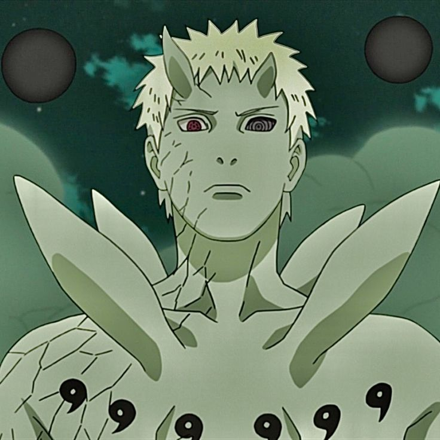

Recurso index.html
Obito Uchiha
Biografia
Adulto
Fui mortalmente herido por Minato, yo me convierti en el Jinchūriki del Diez Colas, pero fui derrotado por Naruto y Sasuke con el apoyo de las Fuerzas Aliadas Shinobi.Yo muy culpable intento redimirme reviviendo a todos los que murieron en la guerra, solo para ser poseído por el Zetsu negro. Al borde de la muerte, yo me opose contra Madara, circunscribe al con su fuerza de voluntad al Zetsu negro y evite sin éxito que Madara recupere el Rinnegan.
Inicio
Adolecncia
Infancia